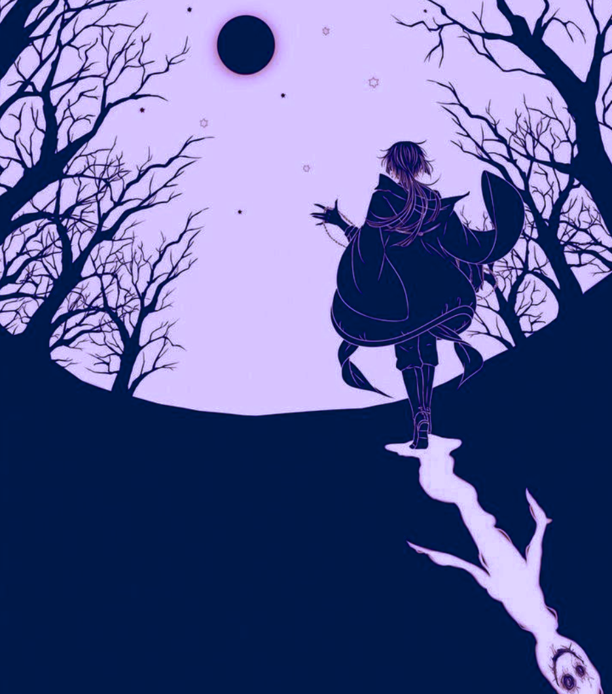

Astolfo, agotado y con la respiración entrecortada, pronunció la respuesta en voz baja, como si el aire mismo le presionara el pecho. Las sombras que lo rodeaban se agitaron violentamente, como si estuvieran a punto de devorarlo, pero de alguna manera, una sensación de alivio le recorrió el cuerpo. El acertijo había sido resuelto.
Pero el precio fue inmediato.
Una intensa luz inundó el bosque oscuro y, por un segundo, las sombras que antes lo acosaban se disolvieron, revelando un paisaje estéril y desolado. Astolfo cayó de rodillas, sintiendo el peso de la fatiga, la oscuridad misma que se derramaba dentro de su ser. La energía de la red de sombras lo había dejado marcado para siempre.
Su ojo izquierdo se nubló, cubriéndose de una neblina densa como si el tiempo mismo lo hubiese erosionado. Sintió el dolor punzante mientras su vida se desvanecía, como si un peso invisible lo aplastara, despojándolo de ocho años de existencia. Los recuerdos de su niñez se desvanecieron como ecos lejanos, atrapados en la eternidad.
Mientras yacía tendido en el suelo, sus fuerzas menguando, algo inexplicable ocurrió. El cuaderno rojo, que había estado a su lado durante toda esta prueba, comenzó a brillar con una intensidad cegadora. Durante 300 años, este objeto había permanecido dormido, una reliquia olvidada, esperando el momento adecuado para revelar su verdadero poder.
De repente, un destello plateado surgió del libro, y una sensación cálida se apoderó de su cuerpo. En un susurro casi etéreo, Astolfo sintió la bendición del dios de la luna inundar sus venas, como una protección divina. El poder del libro le otorgó una resistencia sobrehumana, una barrera contra la corrupción que el abismo de sombras pretendía consumirlo. El dios de la luna le otorgó una segunda oportunidad, la capacidad de resistir la oscuridad que había intentado devorarlo.
Sin embargo, en el instante en que Astolfo dejó caer el libro, agotado y al borde de la muerte, algo terrible sucedió. La figura de las sombras, una manifestación oscura que había estado acechando en silencio, se abalanzó hacia él. Con rapidez mortal, las sombras tomaron el libro rojo, sumergiéndolo en su esencia sin dejar rastro de su paso.
Pero antes de que pudiera caer de nuevo en la oscuridad, una figura emergió de la nada, interrumpiendo la persecución de las sombras. Una figura que parecía emanar una autoridad inhumana, como si el mismo destino lo hubiera convocado para este momento. La figura observó a Astolfo con una mirada que atravesaba el alma.
El hombre, elegante en su presencia pero inquietante en su esencia, alzó la mano hacia las sombras que estaban a punto de escapar con el libro. Su voz, profunda y resonante, llenó el aire.
"Esto... ya ha ido demasiado lejos."
El aire vibró con la energía de la maldición que estaba a punto de desatarse, y en ese instante, el cuaderno rojo, todavía en manos de las sombras, comenzó a retorcerse. La energía mágica, como un torrente descontrolado, se desató. El engendro que se había formado de la magia prohibida comenzó a desintegrarse bajo la fuerza de la maldición, llevándose consigo las vidas de miles de inocentes que se habían fusionado con la entidad.
Las sombras fueron destruidas, pero el precio fue enorme. La magia oscura se desvaneció en un torbellino de energía, dejando tras de sí solo el vacío. Y en medio de ese caos, la figura del director, que había intervenido en este juego mortal, se acercó sin prisa.
Con una sonrisa fría, el director observó el caos que había creado, y con un gesto enérgico, levantó la mirada hacia Astolfo.
"Así es como se termina, joven. La muerte... y el renacimiento. Ahora, en tus manos, está el futuro de todo esto. Eres libre, pero a qué precio... ya lo verás."
Con una risa baja y sombría, la figura dio un paso atrás, desvaneciéndose en la oscuridad que había sido su campo de acción.
Astolfo, exhausto y marcado por la tragedia que acababa de presenciar, se levantó lentamente, mirando hacia el horizonte, preguntándose si alguna vez podría escapar realmente de las sombras que lo habían perseguido.
El director, conocido como Vanitas, había jugado su parte. Ahora, el destino de Astolfo estaba sellado en la oscuridad misma que había desafiado.
Astolfo, apoyado en el tronco de un árbol, sentía su pecho arder con la intensidad de una vida reducida. Sus fuerzas apenas le permitían mantenerse consciente. A su alrededor, el bosque recuperaba su inquietante silencio. Pero algo más permanecía: el eco de las palabras de Vanitas, grabadas como una advertencia indeleble en su mente.
El libro rojo yacía frente a él, ahora inerte. Astolfo lo miró con desconfianza, pero antes de que pudiera tocarlo, una última inscripción comenzó a formarse en su portada con un brillo carmesí. Las letras, torcidas y cargadas de una energía arcana, formaron una frase que parecía un acertijo final, el cierre de esta etapa y la promesa de un desafío mayor.
"Cuando el vacío alcance su cenit y la luz de la luna refleje lo eterno, encuentra la voz que calla el abismo. Solo entonces, lo que fue perdido será revelado."
Astolfo apretó los puños. No sabía qué significaba, pero algo en sus entrañas le decía que las respuestas que buscaba —sobre el cuaderno, Vanitas, y la red de sombras— aún estaban fuera de su alcance. Este desafío no era más que el preludio de algo mucho más grande, una conspiración que no solo amenazaba su vida, sino también la realidad misma.
Se levantó con dificultad, ignorando el vacío en su mirada izquierda y el peso de los años que ahora le faltaban. Mientras se tambaleaba hacia el borde del bosque, con la luna iluminando tenuemente su camino, supo que su lucha estaba lejos de terminar. La red de sombras era solo el comienzo.
En algún lugar, una risa baja resonó entre los árboles, y Astolfo sintió cómo el aire a su alrededor se enfriaba, como una promesa silenciosa de que el juego de Vanitas acababa de empezar.
